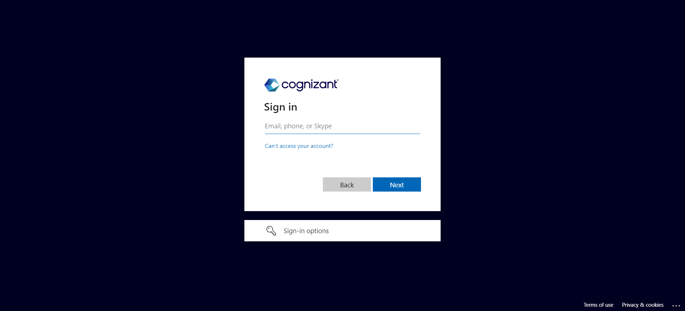

Started
Jun 25, 2023 08:08:32 pm
Ended
Jun 25, 2023 08:10:36 pm
Features Passed
0
Features Failed
1
Features
Scenarios
Steps
Timeline
-
TruTime
8:08:33 pm / 00:02:02:251 Fail
TruTime
06.25.2023 8:08:33 pm 06.25.2023 8:10:35 pm 00:02:02:251 · #test-id=1FailLogin using correct Email ID and PasswordGiven User is on the Login pageallTest.TruTimeTest.tearDown(io.cucumber.java.Scenario)ScreenshotThen User is redirected to Home pageallTest.TruTimeTest.tearDown(io.cucumber.java.Scenario)FailOpening OneCognizant PageGiven User is on Home PageallTest.TruTimeTest.tearDown(io.cucumber.java.Scenario)When User scrolls downStep skippedAnd Clicks on OneCognizantStep skippedThen User is redirected to OneCognizant webpageStep skippedFailSearching and Opening TruTime PageGiven User is on OneCognizant PageallTest.TruTimeTest.tearDown(io.cucumber.java.Scenario)When User Enters Trutime in search barStep skippedAnd Clicks on Trutime resultStep skippedThen User is redirected to TruTime PageStep skippedFailVerification of displayed datesGiven User is on TruTime PageallTest.TruTimeTest.tearDown(io.cucumber.java.Scenario)Then The dates for the current week are correctly displayedStep skippedAnd Today's date is selectedStep skippedAnd Verify Month and YearStep skippedAnd Find Topup LogicStep skipped
-
org.openqa.selenium.NoSuchWindowException
8 tests
org.openqa.selenium.NoSuchWindowException
8 failedStatus Timestamp TestName Fail 20:08:34 pm Then User is redirected to Home page TruTime.Login using correct Email ID and Password.Then User is redirected to Home pageFail 20:09:04 pm allTest.TruTimeTest.tearDown(io.cucumber.java.Scenario) TruTime.Login using correct Email ID and Password.allTest.TruTimeTest.tearDown(io.cucumber.java.Scenario)Fail 20:09:04 pm Given User is on Home Page TruTime.Opening OneCognizant Page.Given User is on Home PageFail 20:09:34 pm allTest.TruTimeTest.tearDown(io.cucumber.java.Scenario) TruTime.Opening OneCognizant Page.allTest.TruTimeTest.tearDown(io.cucumber.java.Scenario)Fail 20:09:35 pm Given User is on OneCognizant Page TruTime.Searching and Opening TruTime Page.Given User is on OneCognizant PageFail 20:10:05 pm allTest.TruTimeTest.tearDown(io.cucumber.java.Scenario) TruTime.Searching and Opening TruTime Page.allTest.TruTimeTest.tearDown(io.cucumber.java.Scenario)Fail 20:10:05 pm Given User is on TruTime Page TruTime.Verification of displayed dates.Given User is on TruTime PageFail 20:10:35 pm allTest.TruTimeTest.tearDown(io.cucumber.java.Scenario) TruTime.Verification of displayed dates.allTest.TruTimeTest.tearDown(io.cucumber.java.Scenario)